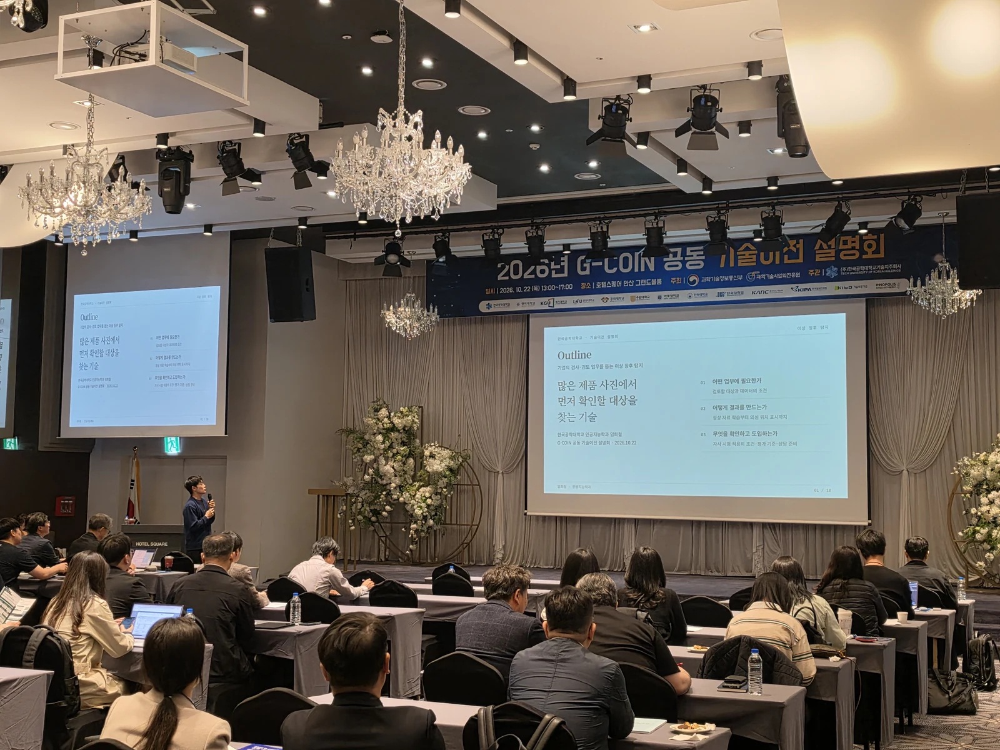
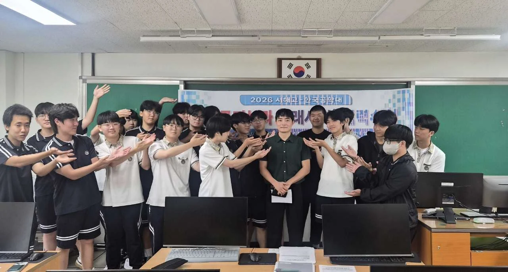
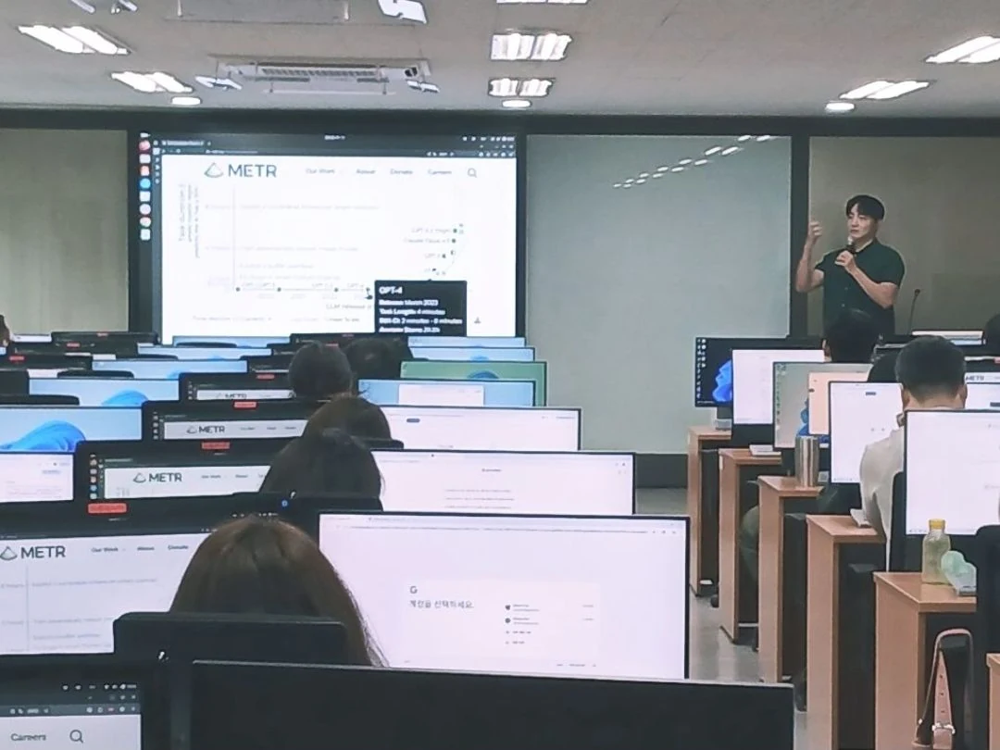

Anomaly Detection for Enterprise Inspection
기업의 검사·검토 업무를 돕는 이상 징후 탐지
Introduced image-based anomaly detection for enterprise inspection, including learning from normal images and identifying unusual patterns.
Generative AI
생성형AI
Build small language models in PyTorch, from tokenization and attention to training and fine-tuning.
Data Visualization
데이터시각화
Explore and communicate data with NumPy, pandas, and Python visualization tools.
Open Source Programming
오픈소스프로그래밍
Develop Python packages through Git-based collaboration, testing, documentation, and continuous integration.

The Current State of AI and How to Prepare for the Future
AI의 현황 및 미래를 준비하는 방법
Introduced AI developments and practical ways for high school students to prepare for an AI-enabled future.

Practical AI Strategies for the Workplace
실무에 바로 적용하는 AI 활용 전략
Applied generative and agentic AI to public-sector work through demonstrations and practical exercises.
AI Innovation
AI이노베이션
Design and evaluate retrieval-augmented generation systems and Model Context Protocol integrations for practical AI applications.
Human-Centered AI
인간중심의AI
Examine LLM security, privacy, and responsible AI through threat analysis, safeguards, and governance.
Secure MCP Server Deployment & Operations
Build and operate remote Model Context Protocol servers with authentication, encryption, and deployment automation.